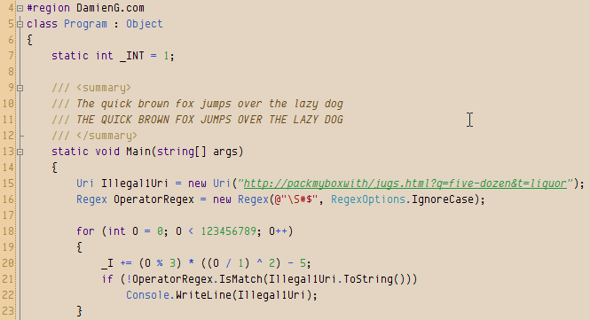

Disclosure on the Influence of Opinions
Recently I came across Damien’s Blog because of a font he created — Envy Code R. The font itself is a good mixture of old and new, with Terminus-style boldfaces (which I like a lot and feel like too little monospaced fonts does this), and a generally pretty clean appearance. Sadly the font was still in beta, and has not seen progress since 2008. As the comments on the page stated, it would be appreciated if new versions can better distinguish between similar characters (0/O, I/l/1/|). But I digress.

His website has a lovely section named “Site details & disclosure”, which states the technologies used on the website, and disclosure on experience that may have influenced his opinion. This is a great practice in my opinion, as it gives readers a better understanding of why some opinion is expressed in some particular way.
On the website he has the following sections:
- Technology
- Hosting
- Licensing
- Responsible disclosure
In the “Responsible disclosure” section, he listed his previous employers, software he used or participated in, affiliates and advertising, and “everything else” (gifts for example). I like the transparency this gives to the readers. I may add these to my About page some day.
Last updated: 2022-06-28